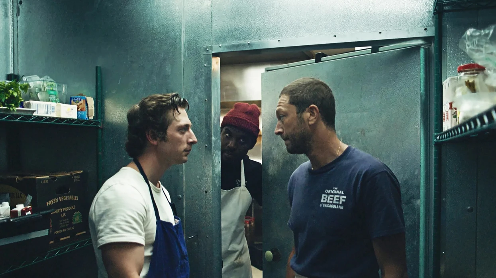
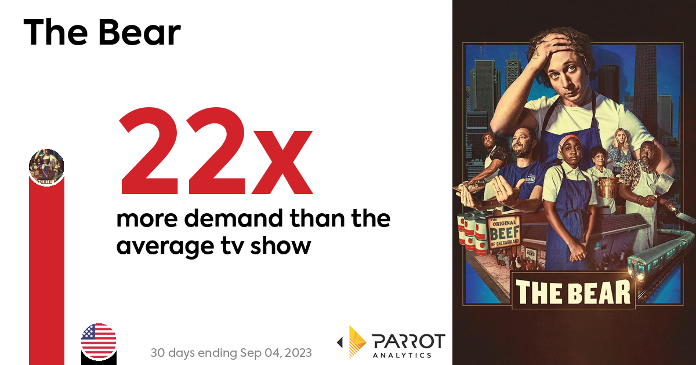

Premise

The life and exploits of "The Bear"'s main character, the Bear, are explored in this engrossing television program. The series presents an exciting fusion of humor, drama, and life lessons by drawing on a rich tapestry of extraordinary narratives. Every episode explores a different aspect of the life of the bear, giving viewers a clear image of its habitat, interactions with other creatures, and never-ending struggle for existence. Although primarily focused on the exploits of the Bear, the program doesn't hesitate to highlight the perspectives of other animals in the environment, giving viewers a complex and engaging narrative that includes multiple points of view.
Production Elements
The Bear's" highly designed creation is what makes it stand out. Utilizing cutting-edge technology, the program uses breathtaking visual effects to bring the bear's natural habitat to life, providing a level of realism that is uncommon on television. The team went to tremendous pains to record true noises from the wild, providing a level of depth and immersion to the viewing experience. The sound design is also excellent. With advisers from the field of wildlife conservation contributing ideas to ensure that the portrayals are correct and based on real-world science, the filmmakers have demonstrated a commitment to authenticity and accuracy.
Audience Reception
Since its release, "The Bear" has received high praise from critics and been well received by audiences of all ages. In highlighting the show's contribution to promoting a greater awareness and appreciation for wildlife and the environment, critics have lauded it for its educational value. With its strength and regal bearing, the bear has earned a place in people's hearts as a beloved character who inspires them to reflect more deeply on the rich and intricate world of the animal kingdom. The show encourages curiosity, investigation, and appreciation for the complicated web of life that supports us all in addition to providing entertainment.